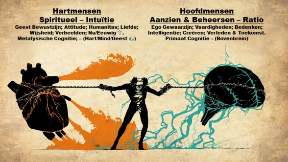
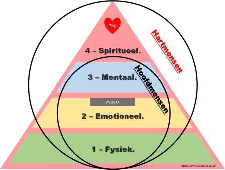

In de kern is het doel van dit boek zeker ook om
de lezer 'wakker' te maken en zichzelf af te laten vragen of zij
bewust willen leven als Hartmensen of zich blijven beperken en
verder onbewust geleefd willen worden als Hoofdmens. Het is naar
mijn overtuiging de keus tussen Mens-bestaan en -evolutie enerzijds
en onbewust 'Zombie'-bestaan en -eindigheid
anderzijds.
Het kunnen maken van een bewuste keuze is een
vermogen (wil) dat aan het hart toebehoort. Dat is een 'bewijs' dat
elk gezond mens op elk moment zijn/haar hart kan laten spreken, of
zoals beroemd neuroloog en psychiater Viktor Frankl (1905-1997) in
zijn Logotherapie inbouwde: de wil op het hoogste niveau 4, het
Hart.
Er is natuurlijk niet slechts één
keuze, namelijk hoofd of hart. De échte eerste keuzevraag is
wie/wat er 'de baas' is. En ja, op de vraag welke baas voor een
menselijk mens zorgt, is het antwoord: het
Hart.

De tweede vraag betreft het bereiken van de
juiste balans. Elk van de vier niveaus in een mens heeft een eigen
specifieke context, waarde en beperkingen daarin. Het bereiken van
een goede balans tussen de vier niveaus met behoud van de gezonde
hiërarchie is (de essentie van) het Leven. De keus voor
Hartmens te willen zijn is de keuze voor een natuurlijke evolutie
van jezelf als mens zonder dat dit de natuur om ons heen belast met
allerlei onnatuurlijke bedenksels.
Tegenover de beperking van het Hoofd stelt
Stephen R. Covey 'het paradigma van de complete mens' waarin hij
nadrukkelijk verwijst naar de dimensies die, ook volgens hem, in
alle westerse én oosterse religies én filosofieën
terugkomen: fysiek, sociaal-emotioneel, mentaal en spiritueel.
Kortom: de Hartmens.

In het "Praktisch"-deel verderop in het boek
staan enkele krachtige tips om praktisch te kunnen
worden.